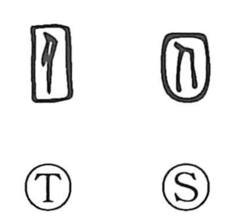

囚

Kun: torawareru | On: shuu
prisoner ・ to imprison ・ to capture ・ to confine
Explanation
Shirakawa sees 囚 as a compound of the enclosure frame 囗 and the human figure 人, a picture of a person shut within a fence. From this image come the senses “to capture,” “to be captured,” and, by extension, “a prisoner.” In classical usage 囚 especially denoted captives taken in war, and compounds like 囚人 (prisoner) and 拘囚 (to be arrested and confined) preserve the core idea of being held within bounds. In antiquity, confinement often meant caves or sunken chambers called 深室 (“deep rooms”) or earthen circular pens known as 圜土, vividly echoing the graph’s original scene of enclosure.